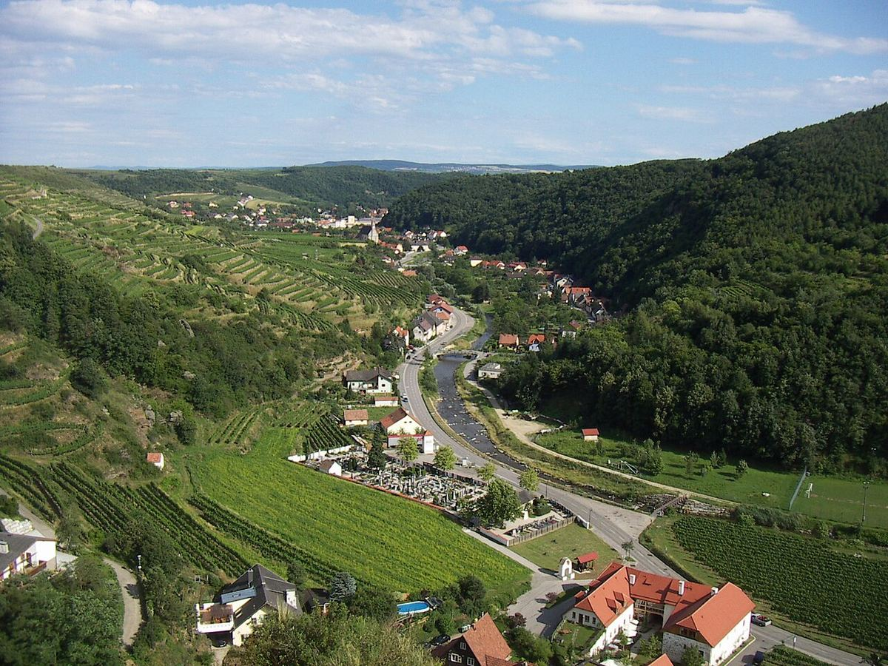

Kremstal
Il Kremstal circonda la storica città di Krems, all’uscita della Wachau, e unisce terrazze di roccia primaria a ovest ad ampie terrazze di loess a est. Produce Grüner Veltliner e Riesling secchi di alto livello.

Storia
Krems è una delle città più antiche dell’Austria e, insieme alla vicina Stein, fu per secoli un importante centro del commercio del vino sul Danubio. I monasteri della zona, in particolare l’abbazia benedettina di Göttweig, situata su una collina a sud del fiume, possedevano estesi vigneti. A Krems ha sede una delle scuole di viticoltura più note del paese, e la città ospita anche un’importante cantina cooperativa. Il centro storico di Krems e Stein fa parte del paesaggio culturale della Wachau iscritto dall’UNESCO nel 2000. La denominazione Kremstal DAC, creata negli anni Duemila, si applica ai Grüner Veltliner e ai Riesling secchi della zona; gli altri vitigni sono commercializzati con la menzione Niederösterreich.
Territorio e clima
La regione si estende intorno a Krems e al corso inferiore del fiume Krems, che sfocia nel Danubio, e comprende anche vigneti sulla riva meridionale del Danubio, intorno a Furth e Göttweig. Il clima è simile a quello della Wachau: l’influenza calda pannonica da est si combina con l’aria fresca proveniente dal Waldviertel, il che produce notti fresche durante la maturazione. Senftenberg, Stein, Rohrendorf, Gedersdorf e Furth sono tra i comuni più noti.
Suoli
A ovest, nella valle del Krems e sui pendii vicini a Stein e Senftenberg, predominano le rocce primarie, come gneiss e scisti cristallini, su terrazze spesso ripide; vigneti come il Pfaffenberg, a Stein, sono tra i più rinomati per il Riesling. A est della città compaiono spessi strati di loess, che formano terrazze ampie e profonde, particolarmente adatte al Grüner Veltliner. Il loess, un sedimento fine depositato dal vento alla fine delle glaciazioni, trattiene bene l’acqua e si scava facilmente, per cui nella zona abbondano le strade incassate tra scarpate e le cantine scavate nei pendii. A sud del Danubio, intorno a Furth, compaiono anche suoli di ghiaie e sabbie.
Vitigni e stili
Il Grüner Veltliner è il vitigno dominante e dà vini che vanno da stili freschi e speziati fino a vini di vigneto di grande corpo, soprattutto sui suoli di loess. Il Riesling trova la sua migliore espressione sulle terrazze di roccia primaria, con vini tesi, di frutta a nocciolo e marcato carattere minerale. Si coltivano anche Weissburgunder, Chardonnay, Zweigelt e altri vitigni. Come altre DAC austriache, la Kremstal DAC distingue tra vini regionali, di comune e di singolo vigneto.